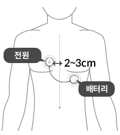
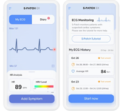
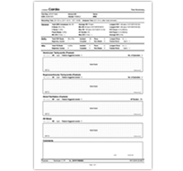

customres
How to use
모바일 앱
S-Patch Ex의 모바일 앱을 통해 수집된 심전도 데이터는
안전하게 클라우드로 전송되어 분석되고 부정맥 등
심장질환 진단지원에 활용됩니다.
-
앱 설치하기
구글 플레이스토어, 애플 앱스토어에서 ‘s-patch ex’를 검색해서 설치하세요
-
부착 및 연결

정확한 부위에 ‘s-patch ex’를 부착해 주세요
-
검사 및 진단하기

프로그램의 정확한 사용으로 검사 및 진단을 진행해주세요. (하단 프로그램 사용법 참조)
-
검사기록 전송

검사가 종료되면 검사기록은 자동으로 전송됩니다.
프로그램 사용법
-
증상의 기록
체중이 많이 앱에서 ①을 클릭하여 ②에서 증상을 선택합니다.
앱사용이 어려울 경우 기기의 전원버튼을 2초간 눌러 증상을 기록합니다. -
환자일지 등록
③을 클릭하여 시간, 증상, 활동 내용 등을 상세기록할때 사용합니다.
-
상태확인
③을 클릭하여 시간, 증상, 활동 내용 등을 상세기록할때 사용합니다.
-
환자일지 등록
④에서 자신의 심전도 파형을 실시간으로 확인이 가능합니다.
⑤에서 클릭하여 검사 진행 현황 화면으로 진입합니다.
나의 상태 화면에서 아래의 그림과 같이 잔여 검사 시간, 배터리 잔량 등을 확인할 수 있습니다. -
검사기록 전송
검사가 종료되면 검사기록은 자동으로 전송됩니다.
만일 검사 종료후에 데이터 전송 버튼이 보이면 클릭하여 검사기록을 전송합니다.